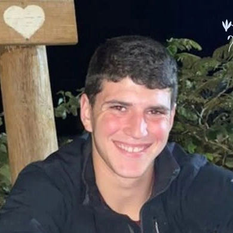

כפר עזה
אפשטיין נטע ז"ל
צעיר משכונת דור צעיר, לוחם משוחרר ובן זוגה של אירן שביט
סיפור חיים
נטע אפשטיין ז״ל, בנם של איילת ואורי, נולד בכ״ג בחשוון תשס״ב, 9 בנובמבר 2001. בן כפר עזה, בן הארץ הזו, ציוני, ערכי, מנהיג, אוהב אדם ואהוב כל כך על מכריו ומוקיריו.
את נטע הכיר איליי מיום שנולד. בגיל חצי שנה לקחו אותו הוריו במנשא לבקר את איליי בניו זילנד. איתם היו ורד ואופירי ליבשטיין, שהביאו איתם את אביב הפצפון. ורד היא אחותו של אורי, ויחד פקד את המשפחה האסון הנורא שבו נרצחו בלהה אפשטיין - אמם של אורי וורד, שהייתה אוהבת אדם, אישה, אם וסבתא מקסימה - וכן אופיר ליבשטיין ונטע. בעת ההתרחשויות גורלו של ניצן, בנם של ורד ואופיר, עדיין לא היה ידוע.
נטע היה ילד בטוח, אחראי, שחקן כדורגל בנשמה ומנהיג מלידה. הוא היה כמו תאום לבן דודו אביב, "ביבו", ואח בכור אוהב ומגונן לאחיותיו רונה ועלמה.
כשהיה בכיתה ז׳ נבחר להצטרף למחנה הרצל בארצות הברית. לאחר מכן חזר לשם עוד פעמיים כמדריך. איילת אימו סיפרה שכאשר נודע להם על הירצחו, קיימו לזכרו טקס ומאות אנשים הגיעו. היא מראה בהתרגשות את הווידאו שנשלח אליה, מחבק אותם מרחוק בשעתם האיומה מכל.
כשיצא נוער העוטף למסע לירושלים כדי לדרוש הגנה לביתם, היו נטע ואביב בני 17 ונטע היה ממובילי המחאה ההיא.
את שנת השירות עשה נטע במעון לילדים חוסים. הוא לא נרתע מקושי, תמיד היה בצד הנותן, כפי שחינכו אותו במשפחה.
לאחר מכן התגייס לשירות קרבי ורק זמן קצר לפני הירצחו השתחרר.
שבעה באוקטובר
נטע ובת זוגו אירן שביט התגוררו בחדרי הצעירים בכפר עזה, ולשם הגיעו הצוררים. זה היה בשלב שהם כבר ידעו שסבתא של נטע נרצחה, ידעו שאופירי נהרג בקרב עם המחבלים, ובשעה שהיו נצורים בממ״ד שמעו את המחבלים פורצים לביתם ודיווחו בקבוצה המשפחתית.
איילת, שבאותה עת שהתה בממ״ד יחד עם עמוס, מיהרה אליו מיד כשהודיע שבלהה נפגעה. לאחר מכן תיארה: "המחבלים זרקו שני רימונים שלא התפוצצו לממ״ד, נטע ואירן נצמדו לקיר ואז רימון נוסף התגלגל קרוב לאירן. נטע לא חשב פעמיים וקפץ על הרימון, וחטף גם צרור יריות. הוא כל כך אהב ודאג לאירן".
איילת הסתכלה בחיבה ובדאגה אימהית על בת הזוג הצעירה, מי שכבר כולם ידעו שתהיה בת משפחה, וסיפרה על התושייה של אירן: "אירן התחבאה מתחת לגופו של נטע, מסתירה את עצמה גם עם מזרן, המחבלים לא בדקו אם יש עוד מישהו בחדר וכך היא ניצלה".
המחבלים זרקו רימון נוסף לחדר. מהרימון הרביעי פרצה שריפה בממ״ד. אירן לקחה טייץ ושמה על פניה כדי שתוכל לנשום. "היא לקחה את הבושם שלה, שידעה שהוא על בסיס מים, וכיבתה את האש", ואז נותרה דוממת יחד עם גופתו של אהובה עוד שעות ארוכות.
אירן הצליחה לכתוב לאיילת על מה שאירע, ואיילת ניסתה לכוון אליה כוחות להצלה. רגע לפני שהסוללה אזלה, העבירה איילת ליעל, אמא של אירן, את מספרי החמ״ל כדי שזו תמשיך את מאמצי החילוץ של אירן. בשעה 16:30 הצליחו חיילי צה״ל להגיע אליה ולחלץ אותה.
איילת ועמוס, אורי, ורד ומאות נוספים נותרו בממ״דים נצורים בכפר עזה עוד שעות רבות.
זיכרון והנצחה
״אהוב ליבי, הבטחת שנישאר יחד לנצח,״ כתבה אירן לנטע בפוסט שפרסמה. ״היינו אמורים להתחתן עוד שנה וחצי. אפילו יש שמלת כלה בארון והחלטנו על שמות לילדים. הבטחת שתשמור עליי מול כל העולם ועשית את זה, במיוחד כשהמחבלים נכנסו אלינו לממ״ד, קפצת על הרימון מבלי לחשוב פעמיים וספגת מספר יריות. הסתרת אותי ושמרת שלא ייראו אותי אבל אני ראיתי הכול. איך הנפש שלך יוצאת מהגוף שלך. הבטחת שנישאר ביחד לנצח, אבל לפעמים הבטחות לא מקיימים״.
נטע אפשטיין ז״ל נרצח בכפר עזה בכ״ב בתשרי תשפ״ד, 7.10.2023. בן 21 במותו. הותיר אחריו הורים, שתי אחיות ובת זוג.